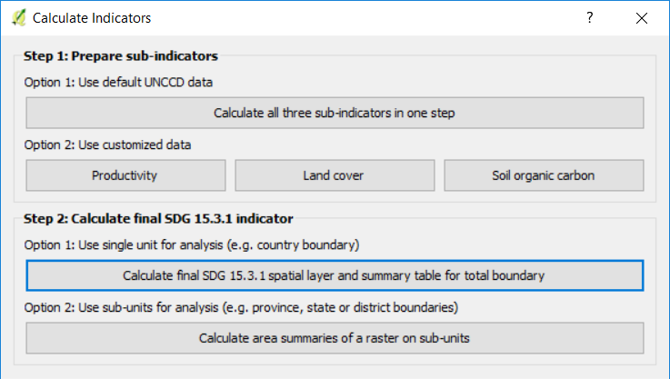
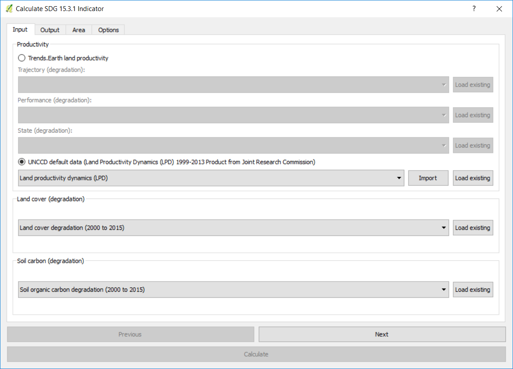
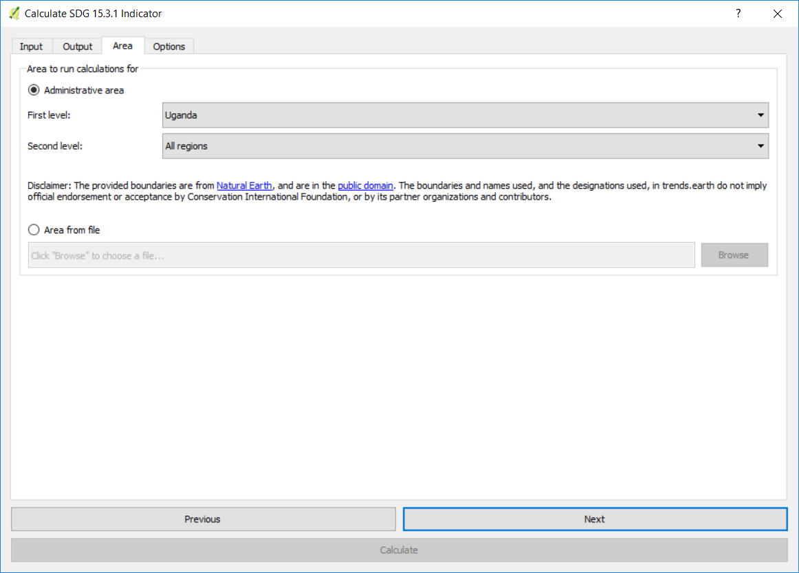

Compute SDG indicator¶
Objective: Learn to integrate the land cover, primary productivity and soil organic carbon sub-indicators to compute SDG 15.3.1 in raster format and tabular outputs with areas estimated.
Estimated time of completion: 20 minutes
Internet access: Not required
Note
You will need to have previously computed the land cover, soil organic carbon and land productivity indicators prior to running this tool. If you have not, please refer to the following specific tutorials to compute them: Run 1-step subindicators, Use custom land cover data, Use custom productivity data, and Use custom soil data.
Search for the Trends.Earth toolbar within QGIS, and click on the Calculate icon (
 ).
).

The Calculate Indicators menu will open. In that window, click on Land degradation indicator (SDG indicator 15.3.1)
Select Calculate final SDG 15.3.1 spatial layer and summary table for total boundary button found under Step 2 - Option 1.
In the Input tab you will select each of the input layers needed for computing the final SDG 15.3.1. You ave the option of using Trends.Earth land productivity or UNCCD default data. In this case select UNCCD default data.
Note
Refer to the SDG Indicator 15.3.1 section of this manual to learn about the Trends.Earth productivity indicators developed following the UNCCD Good Practice Guidance (GPG).
If you have the sub-indicators loaded into the QGIS map, the tool will recognize them and they will show up pre-filled in each corresponding section.
Note
If you have more than one layer loaded into the map per sub-indicator (for example, land cover change computed with default and also with custom data) make sure to check that the one being used to compute the final SDG is the one you want.
If the sub-indicators are not loaded in your QGIS map, then click Load existing next to each of the sub-indicators sections, and nagivate to the folder where you stored them in your computer.
When done selecting inputs, click Next.
In the Output tab you will need to define the name and location for the final SDG 15.3.1 indicator and the summary table. Click Browse next to each of them to select the output location and to define names.
When done, click Next.
In the Area tab define the area of analysis. There are two options:
Use provided country and state boundaries: If you want to use this option make sure the Administrative area option is highlighted, and then select the First Level (country) or Second Level (state or province depending on the country).
Note
The Natural Earth Administrative Boundaries provided in Trends.Earth are in the public domain. The boundaries and names used, and the designations used, in Trends.Earth do not imply official endorsement or acceptance by Conservation International Foundation, or by its partner organizations and contributors.
If using Trends.Earth for official purposes, it is recommended that users choose an official boundary provided by the designated office of their country.

Use your own area file: If you want to use your own area of analysis, make sure the Area from file option is highlighted. Then click Browse and navigate to the folder in your computer where you have the file stored.
When you have selected the area for which you want to compute the indicators, click Next.
In the Options tab you can define the Task name and make some Notes to identify the analysis you are running. What information to indicate is optional, but we suggest noting:
Area of analysis
Dates
Indicators run

When done, click Calculate. A light blue bar will temporarily show, indicating that the task was successfully submitted.
Note
This analysis will be run in your local computer, so the processing time will depend on the size of the area, resolution of the data, and the processing capabilities of your computer. Do not close your computer or put it to sleep while running, because the analysis will fail.

When the analysis is completed a Success message will notify you and the indicator will be loaded to the map.
Note
Refer to the Interpreting summary table section of this manual to learn how to open and interpret the information in the summary table created by this analysis.